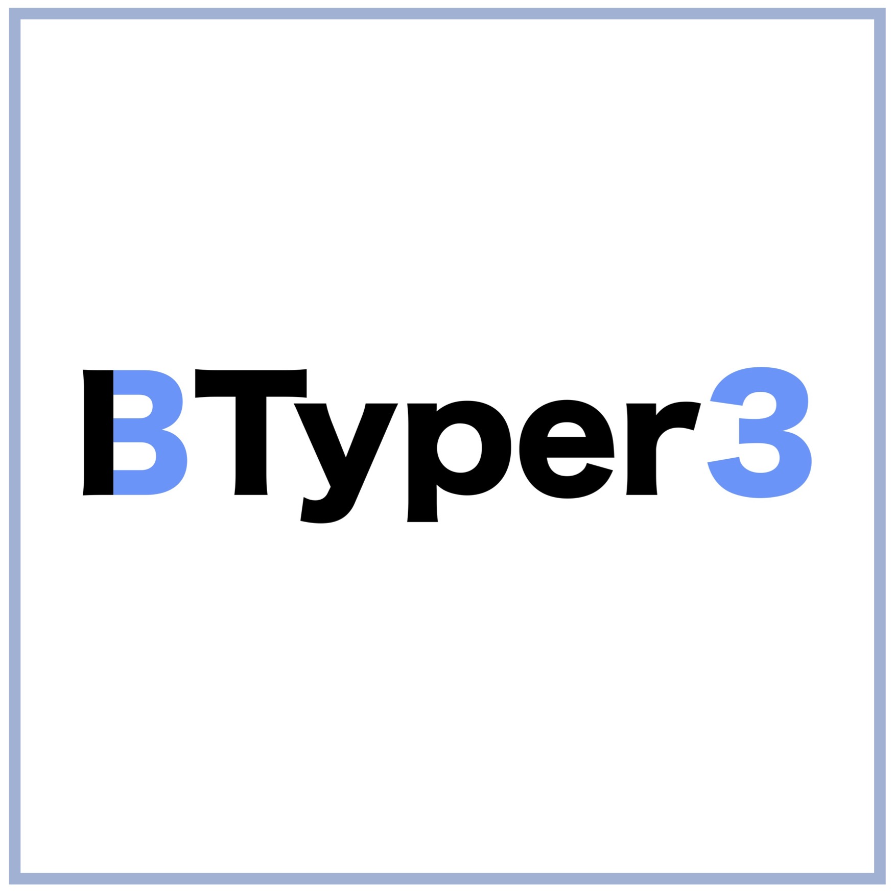

Bioinformatic tools for the
Bacillus cereus
group

Rapid taxonomic classification and typing of
B. cereus
group genomes
A community-curated, global atlas of
B. cereus
group genomes
CompMicroLab @ UmU
|
Umeå University